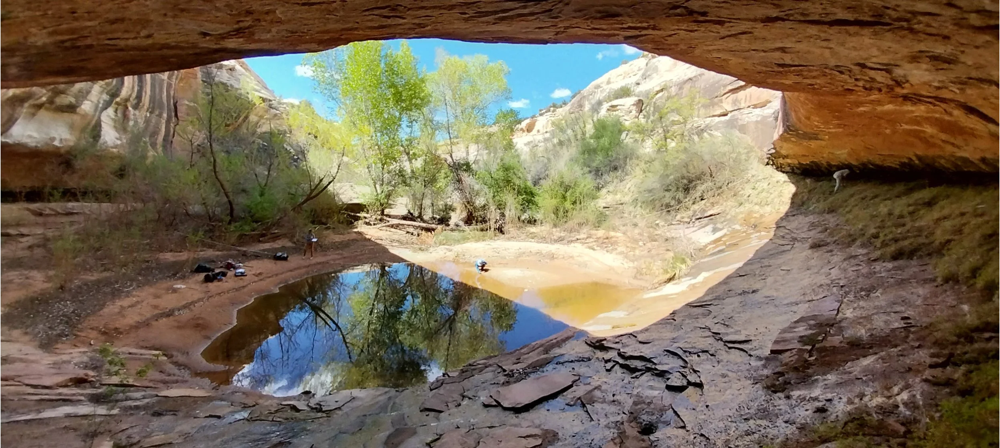
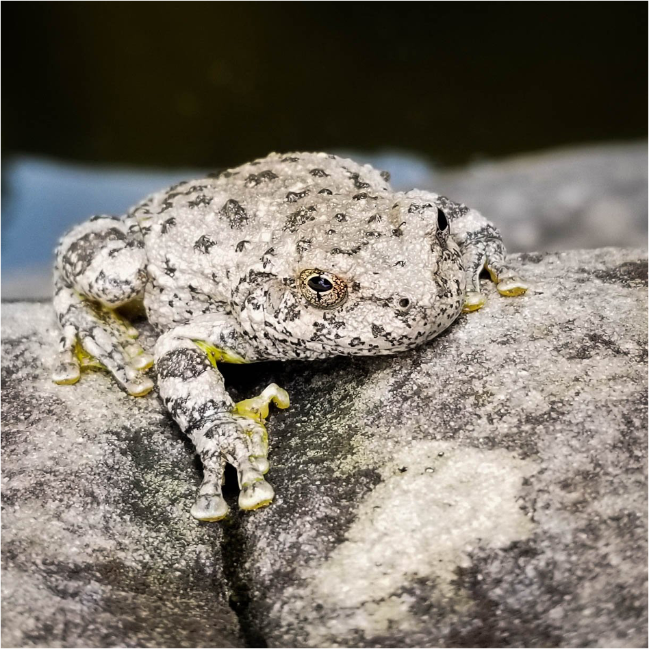
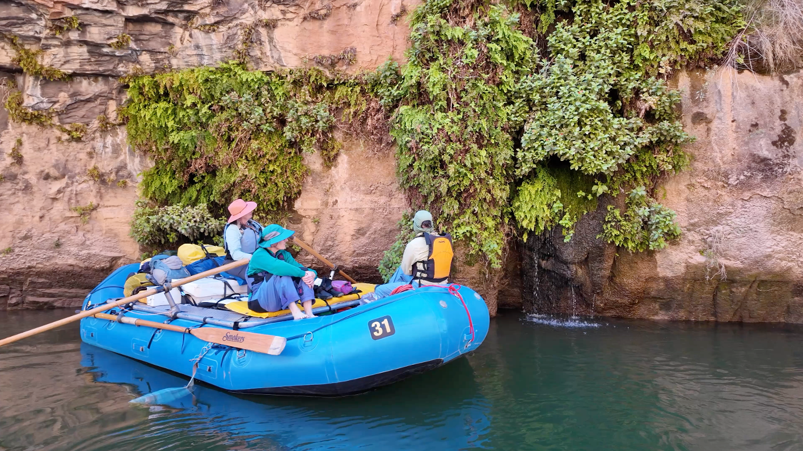
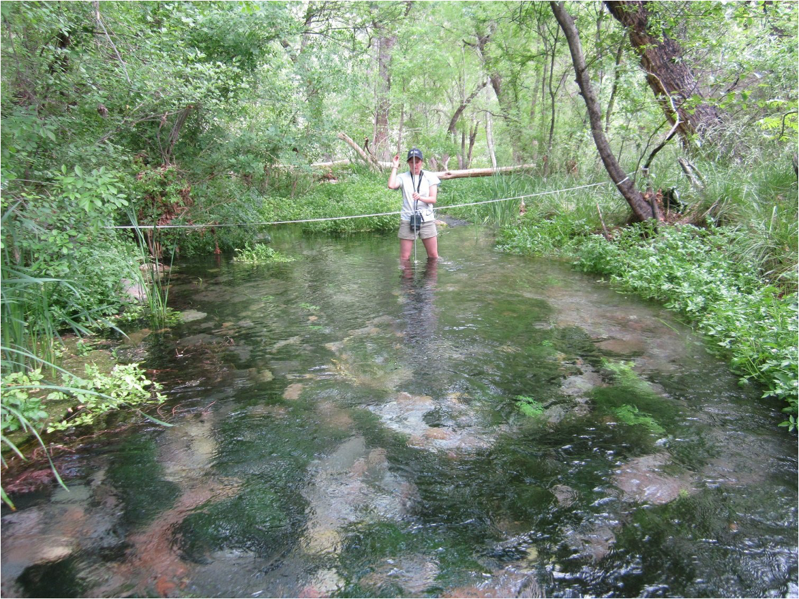

प्राकृतिक जलस्रोत संरक्षण के लिए वैश्विक आधार तैयार करना।
IUCN Global Springs Task Force विभिन्न विषयों और क्षेत्रों की विशेषज्ञता को जोड़ता है ताकि दुनिया भर के प्राकृतिक जलस्रोतों को परिभाषित, मानचित्रित, आकलित और प्राथमिकता दी जा सके तथा उनके संरक्षण के लिए मार्गदर्शन विकसित किया जा सके।
परिभाषित व मानचित्रित करें → आकलन करें → प्राथमिकता दें → मार्गदर्शन दें

प्राकृतिक जलस्रोत वैश्विक रूप से महत्वपूर्ण हैं — फिर भी उन्हें व्यापक रूप से नजरअंदाज किया गया है।
प्राकृतिक जलस्रोत भूजल, सतही जल, स्थलीय पारिस्थितिक तंत्र, जैवविविधता और मानव समुदायों को जोड़ते हैं। फिर भी उनके संरक्षण के लिए जरूरी वैश्विक ज्ञान अभी बिखरा हुआ है।
प्राकृतिक जलस्रोत अत्यंत विशिष्ट जैविक समुदायों को सहारा दे सकते हैं, जिनमें ऐसी प्रजातियां भी शामिल हैं जो कहीं और नहीं मिलतीं। वे पानी, आश्रय, सांस्कृतिक महत्व और परिदृश्यों के बीच महत्वपूर्ण पारिस्थितिक संपर्क भी प्रदान करते हैं।
महत्व के बावजूद, वैश्विक मीठे पानी के संरक्षण में प्राकृतिक जलस्रोतों को पर्याप्त प्रतिनिधित्व नहीं मिला है। परिभाषाएं और वर्गीकरण अलग-अलग हैं, सूचियां अधूरी हैं, स्थिति और संरक्षण का आकलन असमान है और वैश्विक स्तर पर संरक्षण प्राथमिकताएं अभी स्पष्ट नहीं हैं।
कार्यबल इन कमियों को दूर करने के लिए एक साझा वैज्ञानिक और संरक्षण ढांचा विकसित कर रहा है, जो दुनिया भर में कार्रवाई का समर्थन कर सके।
Global Springs Alliance की पहली प्रमुख पहल।
गठबंधन को एक स्थायी मंच के रूप में विकसित किया जा रहा है जो समय के साथ कई वैश्विक पहलों का समर्थन कर सके। IUCN Global Springs Task Force इस व्यापक आंदोलन के तहत शुरू की गई पहली प्रमुख पहल है।
यह एक मूलभूत आवश्यकता से शुरू होता है: प्राकृतिक जलस्रोत संरक्षण को वैश्विक स्तर पर आगे बढ़ाने के लिए साझा ज्ञान, आकलन, प्राथमिकताएं और मार्गदर्शन तैयार करना।
गठबंधन के बढ़ने के साथ पुनर्स्थापना, क्षमता निर्माण, क्षेत्रीय सहयोग, संरक्षण वित्त, सामुदायिक प्रबंधन, निगरानी और वैश्विक प्राकृतिक जलस्रोत समुदाय द्वारा पहचानी गई अन्य जरूरतों पर नई पहलें विकसित हो सकती हैं।
परिभाषित व मानचित्रित करें। आकलन करें। प्राथमिकता दें। मार्गदर्शन दें।
परिभाषित व मानचित्रित करें
प्राकृतिक जलस्रोतों की साझा परिभाषाओं और प्रकारों को आगे बढ़ाना तथा यह समझने के लिए वैश्विक सूची और ज्ञान आधार को मजबूत करना कि वे कहां पाए जाते हैं।
आकलन करें
जलस्रोत-निर्भर जैवविविधता, पारिस्थितिक और जलवैज्ञानिक स्थिति, खतरों और संरक्षण स्थिति के आकलन के तरीकों को आगे बढ़ाना।
प्राथमिकता दें
वैश्विक महत्व वाले जलस्रोतों, संरक्षण की कमियों, संकटग्रस्त प्रणालियों और मौजूदा संरक्षण तंत्रों के साथ एकीकरण के अवसरों की पहचान करना।
मार्गदर्शन दें
व्यावहारिक मार्गदर्शन, उपकरण और क्षमता विकसित करना ताकि सरकारें, समुदाय, कार्यकर्ता और संरक्षण संगठन प्राकृतिक जलस्रोतों का बेहतर प्रबंधन कर सकें।
आधार से वैश्विक अनुप्रयोग तक।
आधार और मानचित्रण
नेटवर्क बनाना, साझा शब्दावली और प्रकार-व्यवस्था को मजबूत करना तथा वैश्विक मानचित्रण और सूची के लिए आधार तैयार करना।
डेटा और आकलन
जैवविविधता, स्थिति, खतरे और संरक्षण के आकलन को आगे बढ़ाते हुए वैश्विक साक्ष्य आधार का विस्तार करना।
प्राथमिकता और रणनीति
संरक्षण प्राथमिकताओं और प्राकृतिक जलस्रोतों को वैश्विक व क्षेत्रीय संरक्षण तंत्रों में शामिल करने के रास्तों की पहचान करना।
मार्गदर्शन और क्षमता
ज्ञान को ऐसे मार्गदर्शन, प्रशिक्षण, उपकरण और तरीकों में बदलना जो कार्यान्वयन और दीर्घकालिक प्रबंधन का समर्थन करें।
एक वैश्विक संरक्षण कमी जिसे अब नजरअंदाज नहीं किया जा सकता।
प्राकृतिक जलस्रोत भूजल दोहन, जलवायु परिवर्तन, प्रदूषण, विकास, भूमि उपयोग परिवर्तन, आक्रामक प्रजातियों और अन्य खतरों के दबाव में हैं। कई जलस्रोत प्रणालियों में उनकी महत्ता व्यापक रूप से पहचाने जाने से बहुत पहले गंभीर पारिस्थितिक प्रभाव हो सकते हैं।
2025 में IUCN World Conservation Congress ने Resolution 016 को अपनाया, खतरे में प्राकृतिक जलस्रोत: उपेक्षित मीठे पानी की प्रणालियों के लिए तत्काल कार्रवाई जुटाना, जिसमें समन्वित वैश्विक कार्रवाई और Species Survival Commission, World Commission on Protected Areas तथा Commission on Ecosystem Management को शामिल करते हुए एक अंतर-आयोग कार्यबल की मांग की गई।


सहयोग से मजबूत विज्ञान।
यह कार्यबल IUCN का एक अंतर-आयोग प्रयास है, जो Species Survival Commission, World Commission on Protected Areas और Commission on Ecosystem Management की विशेषज्ञता को एक साथ लाता है।
इसके काम में दुनिया भर के वैज्ञानिकों, संरक्षण कार्यकर्ताओं, आदिवासी ज्ञान धारकों, नीति विशेषज्ञों, संरक्षित क्षेत्र प्रबंधकों, संस्थानों और साझेदारों की भागीदारी शामिल करने का उद्देश्य है।
समन्वय और संस्थागत सहयोग संयुक्त राज्य अमेरिका के Springs Stewardship Institute और दक्षिण अफ्रीका के Council for Scientific and Industrial Research द्वारा प्रदान किया जा रहा है।
कार्यबल वह जगह है जहां गठबंधन शुरू होता है — समाप्त नहीं।
Global Springs Alliance को प्राकृतिक जलस्रोत समुदाय की जरूरतों के साथ विकसित होने के लिए बनाया गया है। कार्यबल एक वैश्विक वैज्ञानिक और संरक्षण आधार स्थापित करता है। भविष्य की गठबंधन पहलें इसी आधार पर दुनिया भर में कार्यान्वयन, निवेश, पुनर्स्थापना, प्रबंधन और सहयोग को तेज कर सकती हैं।
Global Springs Alliance के बारे में →